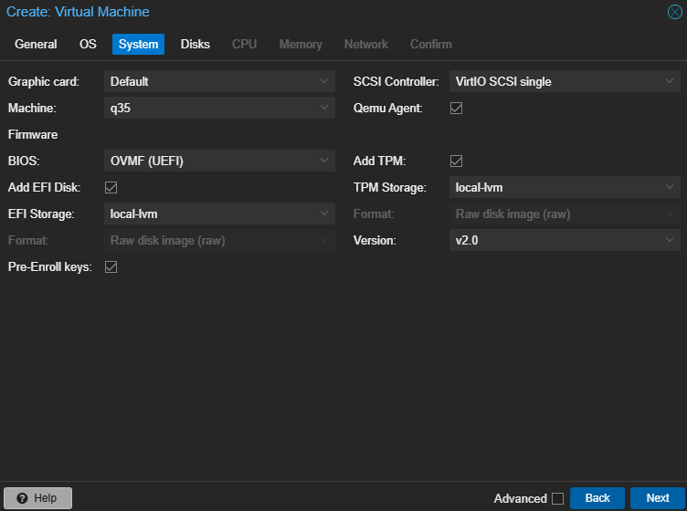
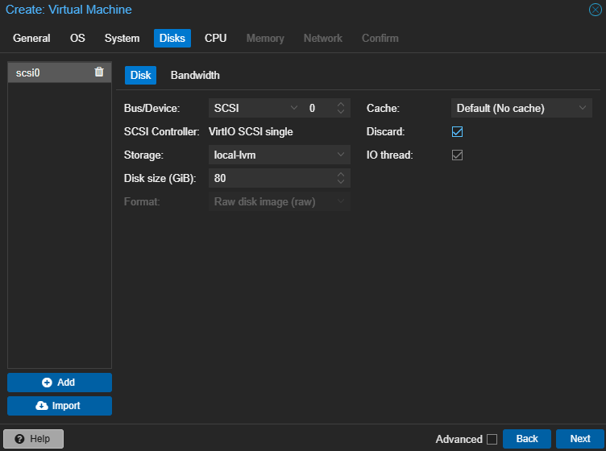
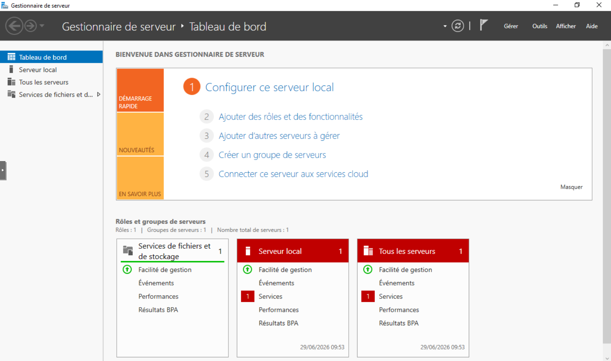

TP02 - Création SRV-DC01
Théorie : Cours - Hyperviseurs · Architecture
Captures :99-Captures/TP02/· Prérequis : TP01-Installation-Proxmox
Objectif
Créer le premier serveur du laboratoire. Ce serveur deviendra plus tard le contrôleur de domaine, le DNS et l'infrastructure Active Directory.
À la fin du TP :
Proxmox
└── SRV-DC01
Création de la VM
| Paramètre | Valeur |
|---|---|
| Nom | SRV-DC01 |
| ID | 100 |
Configuration système
Machine : q35
BIOS : OVMF
TPM : Oui
QEMU Agent : Oui
Pourquoi ?
- matériel moderne ;
- UEFI ;
- compatibilité Windows Server 2022.

Onglet System configuréConfiguration disque
VirtIO SCSI
80 Go
Discard
IO Thread

Onglet Disk configuréRéseau
Bridge : vmbr0
Carte : VirtIO
Installation Windows Server
Choisir :
Windows Server 2022 Standard Evaluation (Desktop Experience)
Installation des pilotes VirtIO
Installer virtio-win-guest-tools.exe.
Configuration réseau
| Élément | Valeur |
|---|---|
| Nom | SRV-DC01 |
| IP | 192.168.1.210 |
| Masque | 255.255.255.0 |
| Passerelle | 192.168.1.254 |
| DNS | 192.168.1.254 |
Validation
Tester :
ipconfig
ping 192.168.1.254
Snapshot
Créer le snapshot FreshInstall.

Vue Proxmox affichant SRV-DC01 allumé et fonctionnelPrérequis
- [v] TP01-Installation-Proxmox validé
- [v] ISO Windows Server 2022 et VirtIO disponibles sur Proxmox
Validation finale
- [v] VM SRV-DC01 créée (ID 100)
- [v] Windows Server 2022 installé
- [v] Pilotes VirtIO installés
- [v] IP statique
192.168.1.210configurée - [v] Snapshot
FreshInstallcréé
Progression
| Étape | Lien |
|---|---|
| Prérequis | TP01-Installation-Proxmox |
| Suite recommandée | → TP03-Creation-WIN11-CLIENT01 |
| Branches | - |
| Théorie | Cours - Hyperviseurs |
Suivi : Progression